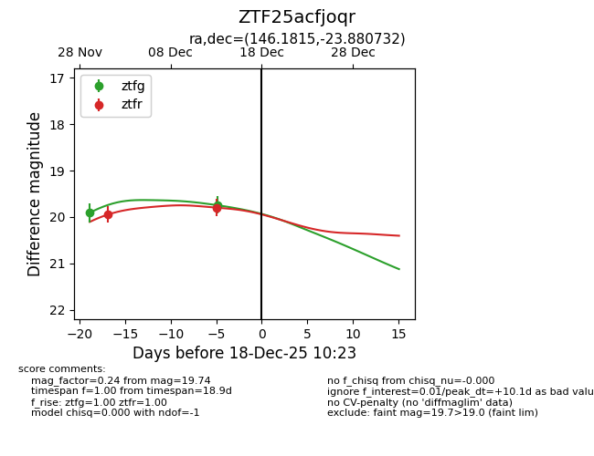
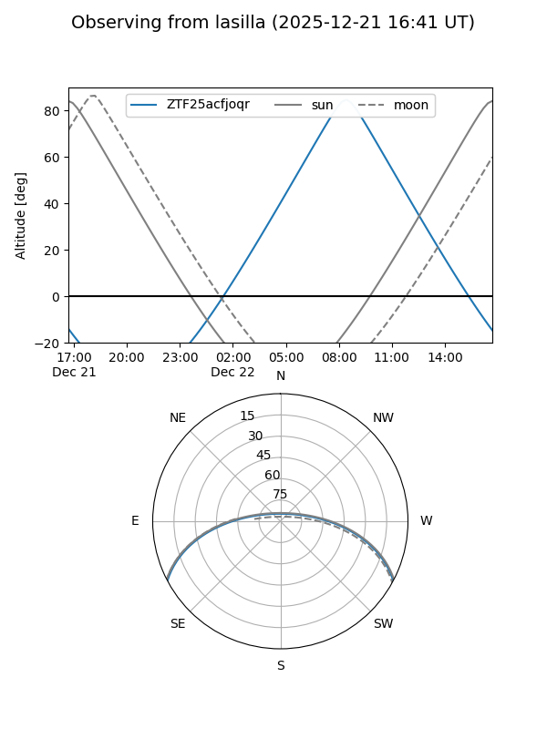
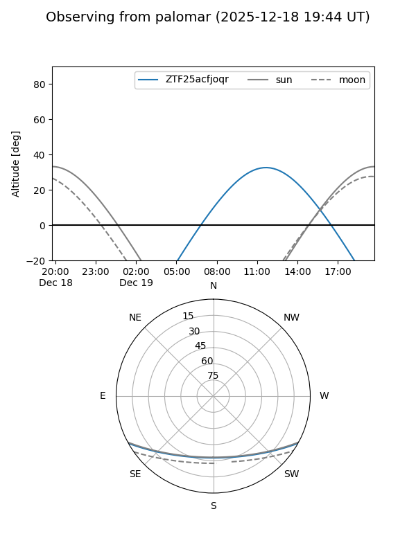

ZTF25acfjoqr
Target ZTF25acfjoqr at 2025-12-18 11:17
Aliases and brokers:
FINK: fink-portal.org/ZTF25acfjoqr
Lasair: lasair-ztf.lsst.ac.uk/objects/ZTF25acfjoqr
ALeRCE: alerce.online/object/ZTF25acfjoqr
alt names
ZTF25acfjoqr (ztf,fink_ztf)
Coordinates:
equatorial (ra, dec) = 146.1815,-23.88073
equatorial (HMS+DMS) = 09:44:43.55,-23:52:50.64
galactic (l, b) = (257.1079,+21.94682)
Photometry
last ztfg=19.74, ztfr=19.80
2 ztfg, 2 ztfr detections
Lightcurve

Visibility


Additional plots